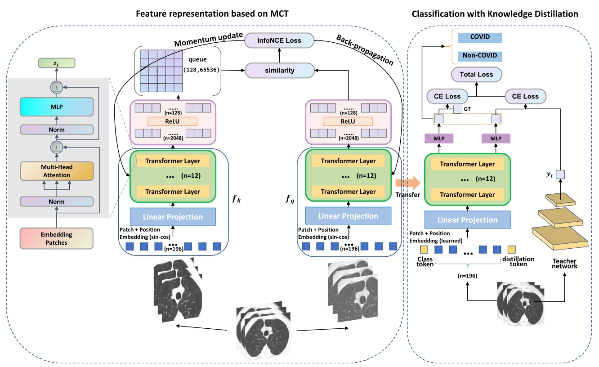
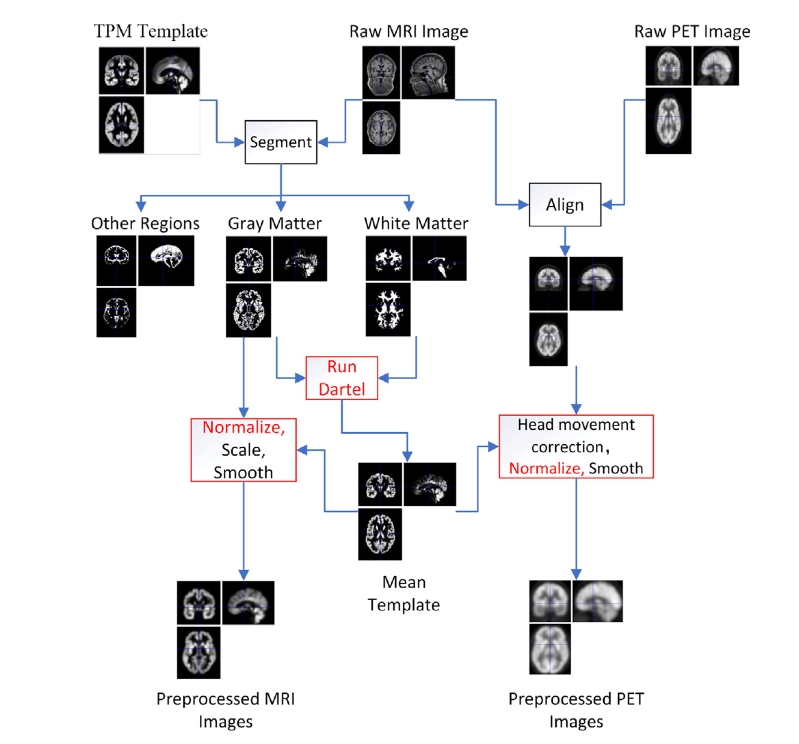

Liu, Jian(刘健)
I’m looking for a PhD position. Here is my full
Curriculum Vitae (CV).
😆 Biography
I am a 3nd-year master student at the Vision Information Processing (VIP) Lab, Qilu University of Technology (Shandong Academy of Sciences), China, under the supervision of Prof. Aimei Dong. My research interests include medical image analysis, computer vision and machine learning.
💥 News
- 🚀🚀🚀 One paper is accepted to Pattern Recognition 2023 [Paper].
- One paper is accepted to Computers in Biology and Medicine 2022 [Paper].
😎 Selected Publications
|  |
Momentum contrast transformer for COVID-19 diagnosis with knowledge distillation.
Aimei Dong, Jian Liu, Guodong Zhang, Zhonghe Wei, Yi Zhai and Guohua Lv.
Pattern Recognition (PR), 2023.
[Paper]
|
|  |
Latent feature representation learning for Alzheimer’s disease classification.
Aimei Dong, Guodong Zhang, Jian Liu and Zhonghe Wei.
Computers in Biology and Medicine (CBM), 2022.
[Paper]
|
✨ Projects
See more
details of my projects.
- Research on In-Context Learning
Parameter-Efficient Fine-Tuning for In-Context Medical Image Segmentation, 2024-Now (1st Auther)
- Research on Auxiliary Diagnosis of COVID-19
Momentum contrast transformer for COVID-19 diagnosis with knowledge distillation, 2022-2023 [Paper] (2st Auther)
GLMR-Net: Global-to-Local Mutually Reinforcing Network for COVID-19 Segmentation and Classification, 2023-Now (1st Auther)
- Researches on Auxiliary Diagnosis of Alzheimer's Disease
Latent feature representation learning for Alzheimer’s disease classification, 2021-2022 [Paper] (3st Auther)
🏃 Misc
I like body building, photography and road bike. As for photography, I prefer star photography.